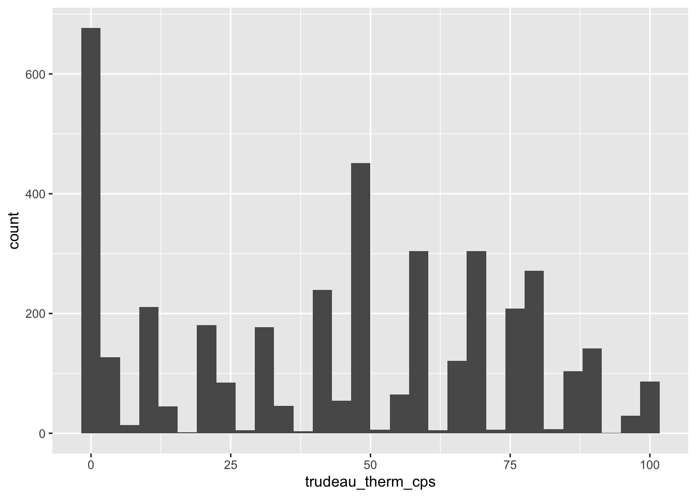
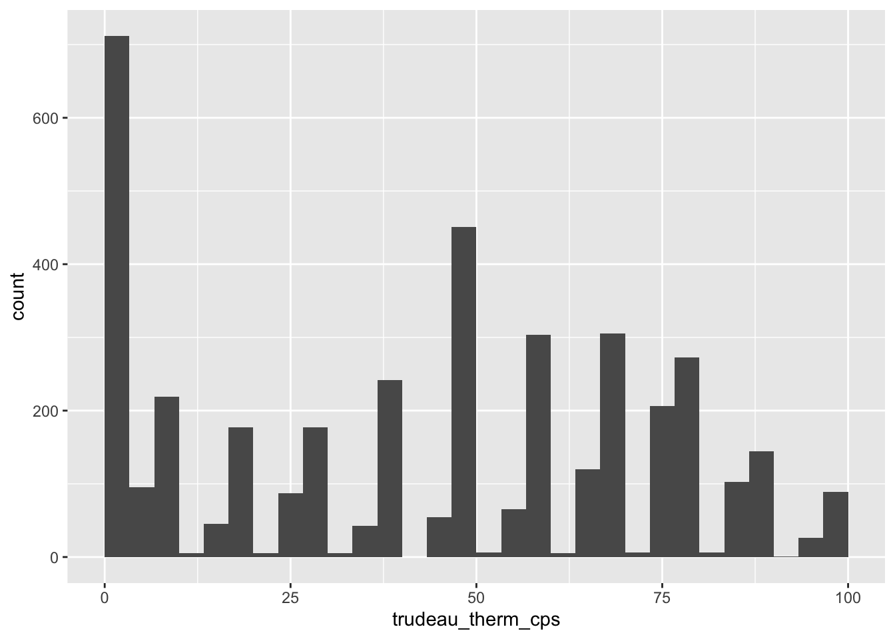
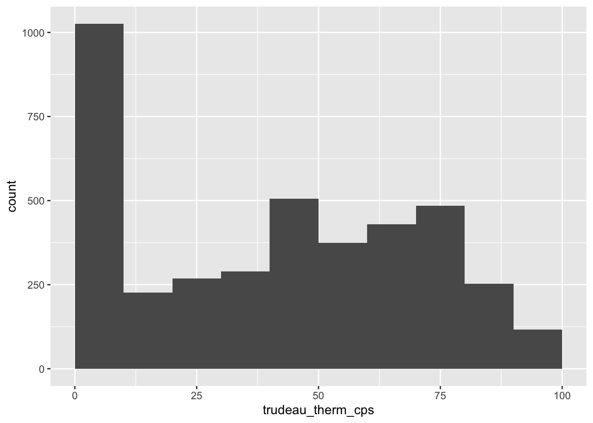
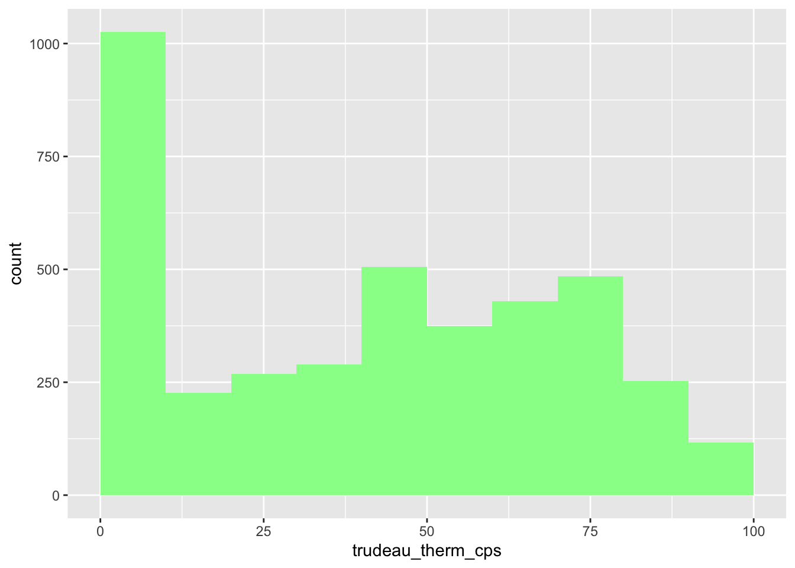
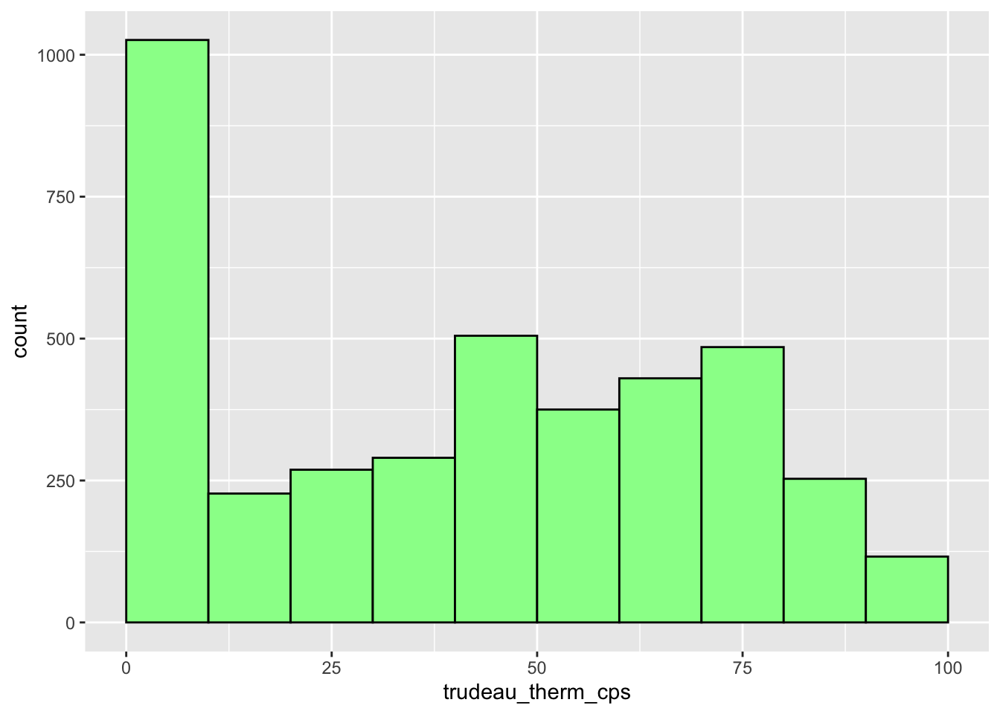
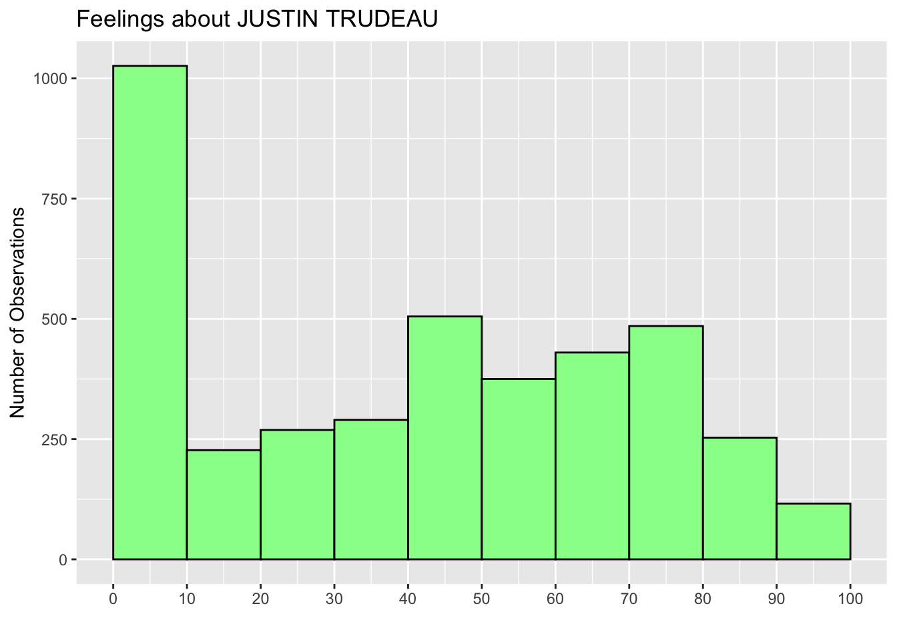
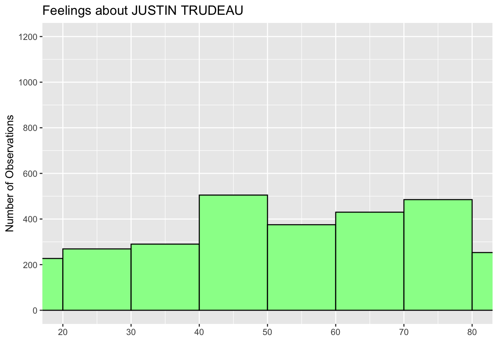
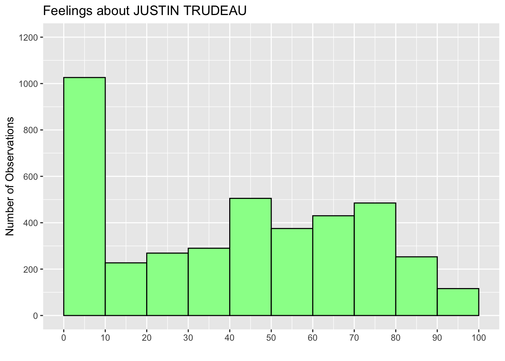
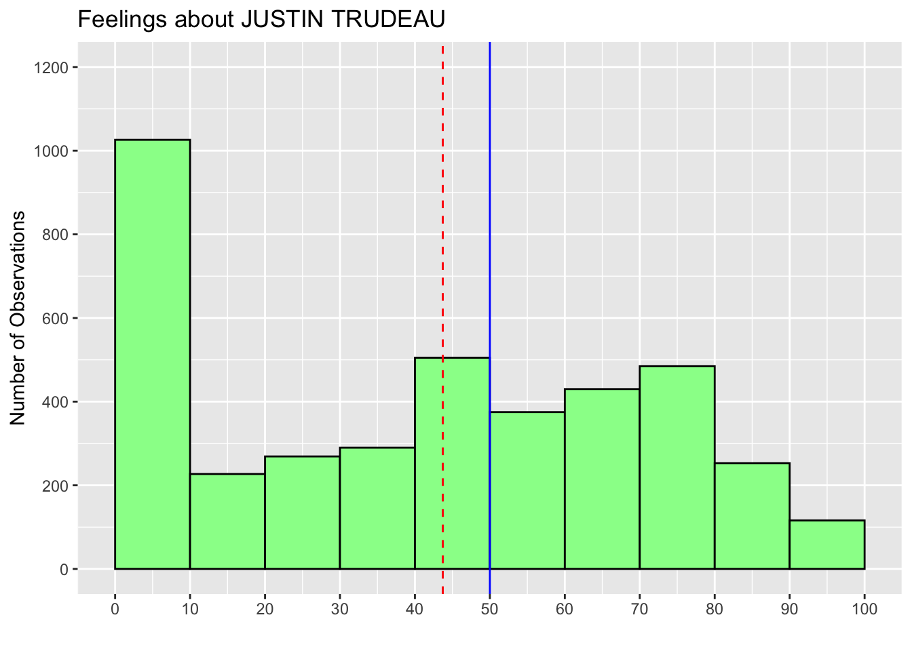
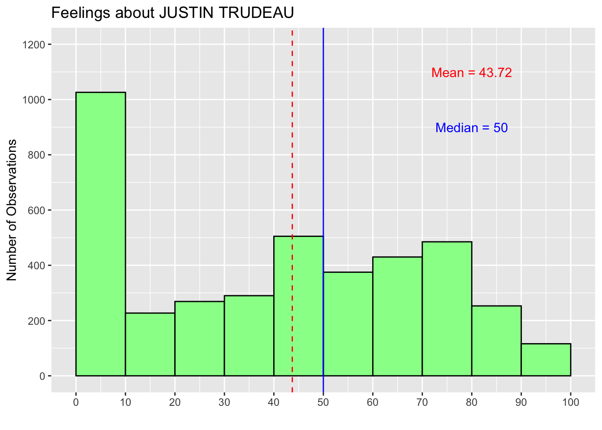

library(tidyverse)3 Descriptive Statistics (1)
Before working on this chapter, you should have completed Chapter 2 and read Section 1.4. If you haven’t, please go back to those chapters, finish them, and then return here.
3.1 Preparation
Before you start working on this chapter, you need to do the following.
3.1.1 Launch RStudio
Launch RStudio. Recall that you don’t need to launch R because RStudio quietly opens R behind its GUI.
If you use RStudio on JupyterHub and don’t remember how to use it, see Section 1.2.
3.1.2 Load POL232.RData
Make sure you load
POL232.RDatainto your current R session. If you forget how to loadPOL232.RDatainto your current R session, see Section 2.1.3.If you use RStudio on JupyterHub or your own computer, you are likely to have already downloaded and stored
POL232.RDatain your local folder either on your JupyterHub account or your own computer.However, if you use RStudio on a lab computer in SS 561, you first need to download
POL232.RDatafrom the class Quercus site because everything you saved on the lab computer is gone once you logged out from it.
3.1.3 Prepare R Script
I suggest you write everything you do in RStudio in an R script and run R functions from within the R script. If you need a refresher for R script, read Section 2.2 and Section 2.3.
For the current purpose, start a new R script and name it “
POL232_Lab#_YourLastName.R” in which#is the number of the current lab session (e.g.,POL232_Lab2_YourLastName.R,POL232_Lab3_YourLastName.R). See Section 2.3.1 for how to start a new R script.
3.1.4 Load Packages
- For the current chapter, you also need to load
tidyversepackage into your current R session (Section 1.4.2).
- If you don’t know about or forget about R packages, read Section 1.4.
- If
library(tidyverse)returns an error message suggestingthere is no package called 'tidyverse', this means thattidyverseis not installed on your computer. In this case, you first need to install it. See Section 1.4.1 for how to dowonload and install R packages.
3.1.5 Actually Write R Functions
I suggest you actually write the R functions used below in your R script instead of copying and pasting them. By actually writing them and occasionally making mistakes and correcting them, you can get used to how RStudio works more quickly and effectively.
If you simply copy and paste them, you will not learn much about RStudio and will not get used to it.
In your R script, leave sufficient descriptions of the functions after the
#sign (see Section 2.2.2) so that you can use your R script later as your reference when you conduct analysis using these R functions.These descriptions are notes for yourself. Organize these descriptions/notes so that they are convenient for your futur use.
3.2 Histogram: ggplot() + geom_histogram()
Let’s draw a histogram for the Trudeau thermometer in the Canadian Election Study 2019 (ces2019), which records how a respondent feels about Justin Trudeau, the incumbent prime minister in 2019, on a scale from 0 (coldest feeling) to 100 (warmest feeling).
We use the ggplot() function for this purpose.
Recall that an R function mostly takes the form of function.name(...), and we specify arguments in the ... within the parentheses. A basic syntax of the ggplot() function to draw a histogram is as follows. (Don’t implement the code below, which is intended only to show the syntax of the ggplot function and is not intended to be implemented. You will get an error message if you implement the following code.)
ggplot(name-of-data-frame, aes(name-of-variable)) +
geom_histogram()First, the ggplot function takes two arguments at minimum. (Once again, recall that what a function takes in its parentheses () is called an argument.) The first argument is the name of the data frame that contains the variable we want to visualize, and the second argument is the aes() function. Since the second argument is a function, it also takes arguments. The aes() function takes one argument at minimum, the name of the variable which we want to visualize.
In summary, the ggplot function tells R which variable from which data frame we want to visualize.
Then, the ggplot function should be followed by the geom_histogram() function connected by a plus sign (+). We may also specify arguments for the geom_histogram() function, but it still works without any arguments.
Let’s try this function. There are two Trudeau thermometers in ces2019: the one asked during the election campaign, truedau_therm_cps, and the other asked after the election, truedau_therm_pes. Here we use the one asked during the campaign, truedeau_therm_cps.
Run the following function — in particular, write it in your R script and run it from there. See Section 2.2.1 for how to execute R functions from your R script.
Then, a histogram will appear in the Plots tab at the lower right pane.
ggplot(ces2019, aes(trudeau_therm_cps)) +
geom_histogram()`stat_bin()` using `bins = 30`. Pick better value `binwidth`.Warning: Removed 45 rows containing non-finite outside the scale range
(`stat_bin()`).
As you can see, there is a warning message suggesting that R removed “45 rows containing non-finite values.” What this means is that when it drew this histogram, R removed 45 observations for which trudeau_therm_cps is missing.1
While the above simple specification of the ggplot() function can produce the histogram above, it doesn’t look great. We should edit this histogram further such that it looks better. To do this, we may add further functions connected by a plus sign (+) to the ggplot() function and/or specify more arguments to these functions.
Let’s try what we can do step by step.
3.2.1 Location and Width (or Number) of Bins: boundary, binwidth, bins
First, you may have noticed that the left most bin is centered at 0, and the right most bin is centered at 100, although the value of trudeau_therm_cps ranges from 0 to 100 — i.e., there are no observations with the values smaller than 0 or greater than 100. We may want to adjust the histogram such that the bins are drawn within the possible values of the variable — in this case, between 0 and 100. We can do this by setting the boundary argument in the geom_histogram() function.
If you set the boundary argument at the minimum value of the variable — 0 in the current case — then the histogram is adjusted such that the left most bin starts from this minimum value, rather than starting just before this minimum value.
ggplot(ces2019, aes(trudeau_therm_cps)) +
geom_histogram(boundary=0)
Now the histogram looks slightly better, but you may think that the bin width is too narrow, or equivalently, the number of bins is too many. We can adjust this by specifying either the bin width by the binwidth argument or the number of bins by the bins argument in the geom_histogram() function.
Below I use the binwidth argument to specify the width of each bin as 10 points.
ggplot(ces2019, aes(trudeau_therm_cps)) +
geom_histogram(boundary=0, binwidth = 10)
Now the histogram looks much better.
3.2.2 Color of Bins: fill, color
Suppose you want to change the color of the bins. We can specify the fill argument in the geom_histogram function as below. You may specify the name of the color you want. You can find the color names used in R online, here and here, for example.
ggplot(ces2019, aes(trudeau_therm_cps)) +
geom_histogram(boundary=0, binwidth = 10, fill = "palegreen")
Now the boundaries of each bin are not clear. Let’s draw a line around each bin. We can do this by specifying the color argument in the geom_histogram function. I made these lines black below, but you may of course choose a different color.
ggplot(ces2019, aes(trudeau_therm_cps)) +
geom_histogram(boundary=0, binwidth = 10, fill = "palegreen", color = "black")
3.2.3 Title and Axis Labels: labs(), ylab(), xlab()
We can add a title by adding the labs() function, and we can change the axis labels by the ylab() and xlab() functions. Below I added a title that reads “Feelings about JUSTIN TRUDEAU” and changed the Y-axis label from the default “count” to “Number of Observations” and the X-axis label from the default variable name (trudeau_therm_cps) to nothing. Don’t forget to connect all these functions by a plus sign (+).
ggplot(ces2019, aes(trudeau_therm_cps)) +
geom_histogram(boundary=0, binwidth = 10, fill = "palegreen", color = "black") +
labs(title="Feelings about JUSTIN TRUDEAU") +
ylab("Number of Observations") +
xlab("")3.2.4 Values and Tick Marks Appearing on the X and Y Axes: scale_x_continuous(), scale_y_continuous()
We can also change the values of the variable on the X-axis at which tick marks and numbers appear by the scale_x_continuous() function with the breaks argument. In the histograms above, the tick marks and numbers appear at 0 to 100 with an interval of 25. Below I change them to 0 to 100 with an interval of 10. For this purpose, the breaks argument is set to seq(0, 100, 10).
The seq(starting-number, ending-number, interval) function is another function which produces a sequence of numbers from starting-number to ending-number with the specified interval. That is, seq(0, 100, 10) produces a sequence from 0 to 100 with an interval of 10.
As you can see in the X-axis of the histogram below, setting breaks = seq(0, 100, 10) in the scale_x_continuous function (the last line of the code below) changes the values and tick marks at the X-axis to 0 to 100 with an interval of 10.
ggplot(ces2019, aes(trudeau_therm_cps)) +
geom_histogram(boundary=0, binwidth = 10, fill = "palegreen", color = "black") +
labs(title="Feelings about JUSTIN TRUDEAU") +
ylab("Number of Observations") +
xlab("") +
scale_x_continuous(breaks = seq(0, 100, 10))
Try other values to see how the values and tick marks change on the X-axis. For example, if you change this to seq(20, 60, 20) (the last line of the code below), then the values and tick marks appear only from 20 to 60 with an interval of 20.
ggplot(ces2019, aes(trudeau_therm_cps)) +
geom_histogram(boundary=0, binwidth = 10, fill = "palegreen", color = "black") +
labs(title="Feelings about JUSTIN TRUDEAU") +
ylab("Number of Observations") +
xlab("") +
scale_x_continuous(breaks = seq(20, 60, 20))To change the values and tick marks on the Y-axis, we can add the scale_y_continuous function with the same breaks argument. Below I change the values and tick marks to 0 to 1000 with an interval of 200 (the last line).
ggplot(ces2019, aes(trudeau_therm_cps)) +
geom_histogram(boundary=0, binwidth = 10, fill = "palegreen", color = "black") +
labs(title="Feelings about JUSTIN TRUDEAU") +
ylab("Number of Observations") +
xlab("") +
scale_x_continuous(breaks = seq(0, 100, 10)) +
scale_y_continuous(breaks = seq(0, 1000, 200)) 
3.2.5 Range of Values at the X and Y Axes: coord_cartesian()
We can also change the range of values appearing on both X and Y axes by adding the coord_cartesian() function with the xlim and ylim arguments, respectively. In the code below at the last line, I added coord_cartesian(ylim = c(0,1200)) to change the range of values on the Y-axis to the range between 0 and 1200. Accordingly, I also changed the ending value of the breaks argument in the scale_y_continuous function to 1200 (the second to the last line).
ggplot(ces2019, aes(trudeau_therm_cps)) +
geom_histogram(boundary=0, binwidth = 10, fill = "palegreen", color = "black") +
labs(title="Feelings about JUSTIN TRUDEAU") +
ylab("Number of Observations") +
xlab("") +
scale_x_continuous(breaks = seq(0, 100, 10)) +
scale_y_continuous(breaks = seq(0, 1200, 200)) +
coord_cartesian(ylim = c(0, 1200))
Just as an example, I also added the xlim argument to the coord_cartesian() function below (the last line) to shorten the range of X-axis.
ggplot(ces2019, aes(trudeau_therm_cps)) +
geom_histogram(boundary=0, binwidth = 10, fill = "palegreen", color = "black") +
labs(title="Feelings about JUSTIN TRUDEAU") +
ylab("Number of Observations") +
xlab("") +
scale_x_continuous(breaks = seq(0, 100, 10)) +
scale_y_continuous(breaks = seq(0, 1200, 200)) +
coord_cartesian(ylim = c(0, 1200), xlim = c(20,80))
Now you can draw a pretty nice histogram for the variable of your interest.
3.3 Erase All Histograms Produced: dev.off()
If you want to erase all the histograms you drew on the Plots tab on the lower right pane, you can delete all of them by using the dev.off() function without arguments.
dev.off()3.4 Assign Histogram to New Object and Print: print()
You can also assign your histogram to a new object and keep it in your R workspace (recall that the R workspace is a working memory in which the objects you created are stored).
hist_trudeau <- ggplot(ces2019, aes(trudeau_therm_cps)) +
geom_histogram(boundary=0, binwidth = 10, fill = "palegreen", color = "black") +
labs(title="Feelings about JUSTIN TRUDEAU") +
ylab("Number of Observations") +
xlab("") +
scale_x_continuous(breaks = seq(0, 100, 10)) +
scale_y_continuous(breaks = seq(0, 1200, 200)) +
coord_cartesian(ylim = c(0, 1200))Recall that <- is an assignment operator. In the above code, we assigned the ggplot() functions to a new object named hist_trudeau. You may have noticed that running the above code did not produce a histogram. Instead, the above code assigned the above chunk of functions to hist_trudeau and kept it in your R workspace. Run ls() or objects() to see that you have hist_trudeau as a new object in your R workspace.
ls()[1] "anes2020" "ces2019" "hist_trudeau" "ipe2010" "ipe2015"
[6] "usstates2010"To draw/produce a histogram using hist_trudeau, you may use the print() function with hist_trudeau as its argument.
print(hist_trudeau)
Or you can simply type hist_trudeau.
hist_trudeau
3.5 Mean and Median
In addition to visualization, we may want to compute some sample statistics (= numerical summaries of a variable). Let’s compute the mean and median of a variable using RStudio. We use the mean() and median() functions, respectively.
3.5.1 Compute Mean and Median: mean(), median()
Let’s compute the mean of the variable trudeau_therm_cps. The mean() function takes a variable name as their argument.
As trudeau_therm_cps is one column of the data frame ces2019, we need to use $ to access it — more specifically, we can refer to trudeau_therm_cps as ces2019$trudeau_therm_cps.
If you type in ces2019$trudeau_therm_cps in the R Console (try this), R will print the values of this variable (or the corresponding column of ces2019) in the Console. In general, the syntax to access a variable in a data frame is name-of-data-frame$name-of-variable. We connect the name of the data frame and the name of the variable by a dollar sign ($).
The mean() function takes the name of a variable specified this way as their argument. In addition, we should specify another argument, na.rm, as shown below.
mean(ces2019$trudeau_therm_cps, na.rm = TRUE)[1] 43.71655Here, na.rm means “remove NA.”
In R’s data frame, all missing values are recorded as NA. The na.rm = TRUE tells R to remove all missing values (NA) when it computes the mean of a variable by the mean() function.
If you don’t specify na.rm = TRUE and there are missing values (NA) in the variable of your choice, then R doesn’t compute the mean and instead returns NA as shown below.
mean(ces2019$trudeau_therm_cps)[1] NASo, it is important to specify the na.rm argument in the mean() function.
3.5.2 Compute Median: median()
The median() function takes the same arguments as the mean() function. The code below computes the median of trudeau_therm_cps.
median(ces2019$trudeau_therm_cps, na.rm = TRUE)[1] 503.6 Mean and Median on Histogram
Now that we know the mean and median of trudeau_therm_cps, let’s draw the lines corresponding to them on its histogram.
3.6.1 Draw Vertical Lines for Mean and Median: geom_vline()
We computed above that the mean of trudeau_therm_cps is 43.72 and the median is 50. Let’s draw lines for these values on its histogram. We are going to draw a vertical line using the geom_vline() function.
We can add this function to the previous chunk of code that we stored in the object hist_trudeau in Section 3.4.
The xintercept argument is set to the value at which a vertical line is drawn, the linetype argument is the type of line to be used, and the color argument is the color of the line that you want to use. You can find the names of the line types used in R online, for example, here.
hist_trudeau2 <- hist_trudeau +
geom_vline(xintercept = 43.72, linetype = "dashed", color = "red") +
geom_vline(xintercept = 50, linetype = "solid", color = "blue")
print(hist_trudeau2)
Note that in the above code, we created a new object hist_trudeau2, which updates the ggplot() functions in hist_trudeau with the geom_vline() function, and then used the print() function to draw this new histogram.
3.7 Add Texts to Histogram: annotate("text")
We can also add texts to a histogram with the annotate() function. This function annotates a histogram with several different elements, one of which is texts. To add texts to our histogram, we specify the first argument of the annotate() function as "text". The function also takes the x and y arguments, which specifies the location of the texts, and the label argument, which specifies the content of the texts we want to add. The values of the x and y arguments are from the values of the X-axis (the horizontal axis) and the Y-axis (the vertical axis) of the histogram we have drawn. Recall that in our histogram about the Justin Trudeau thermometer variable, the values of the Y-axis range from 0 to 1200 and those of the X-axis range from 0 to 100. Based on these values, the x and y arguments determine the location of the center of the texts. I also added the color argument to specify the text color.
hist_trudeau3 <- hist_trudeau2 +
annotate("text", x = 80, y = 1100, label = "Mean = 43.72", color = "red") +
annotate("text", x = 80, y = 900, label = "Median = 50", color = "blue")
print(hist_trudeau3)
Below, I tried other values for the x and y arguments to demonstrate how the texts move. As you can see, the text for the median is now outside the range of the histogram. I’d suggest you try other values for the x and y arguments to see how the location of the texts changes.
hist_trudeau3 <- hist_trudeau2 +
annotate("text", x = 20, y = 1200, label = "Mean = 43.72", color = "red") +
annotate("text", x = 95, y = 700, label = "Median = 50", color = "blue")
print(hist_trudeau3)
3.8 Practice
Draw a histogram of the variable growth_WDI_PW from the ipe2015 data frame. Look it up in the dataset’s codebook (ipe2010&2015_codebook.pdf) available on the class Quercus site to find what this variable is. Edit the histogram so that it appears easily interpretable. For example, add a title and labels on the Y-axis and X-axis, such as “Number of Observations,” and choose an appropriate bin width that makes the histogram easily interpretable. Also, add the mean to the histogram.
This variable is missing for these 45 respondents because they didn’t answer this question, didn’t know Truedeau, etc.↩︎